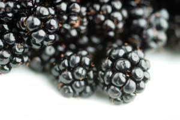
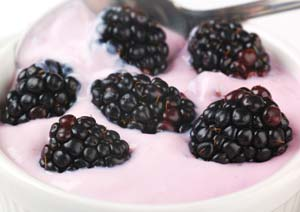
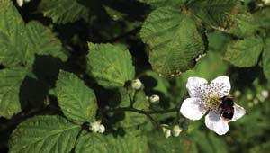
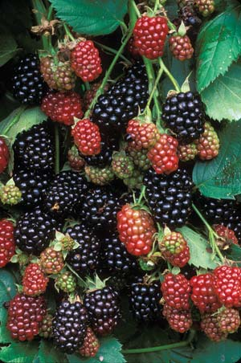
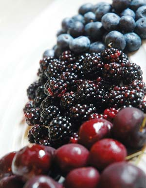
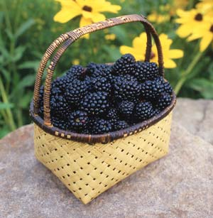

Enjoy Fresh Blackberries
Blackberries are a low-maintenance, easy-to-grow fruit and they have many health benefits
By Barbara Pleasant
December 2007/January 2008
Blackberries are among the best and worst of fruits you can grow in your yard. In many areas, they grow themselves - often a little too well. The thorny vines eagerly overtake available space, and when you’re forced to take a stand, it can be a prickly, bloody battle.
If you have wild blackberries on your land, there are a few simple steps you can take now to help the plants produce better berries that are easier to pick. Better yet, diversify your home orchard - or underutilized space along a fence - to grow cultivated varieties famous for their zippy sweet flavor, large fruit and phenomenal productivity.
Thornless varieties now are available for easier picking, and in the newest twist in blackberries, you can grow late-season varieties that make it easier to grow blackberries in cooler climates where cultivated plants often lose their buds to winter weather (keep reading for more on new, cold-hardy blackberries).
Basic Blackberry Behavior
Like most other bramble fruits, blackberries bear best on one- and two-year-old canes, or woody stems. The many varieties come in either upright or trailing plants. With upright varieties, if you pinch or snip back the tips of new canes mid-summer (July is a good time), the plants will respond by growing heavy-blooming lateral branches that emerge from the main canes at right angles. “Tipping back” canes to 5 to 6 feet improves the productivity of upright blackberries (including wild ones) and keeps the best berries at the perfect picking height. Tipping back is not necessary with trailing varieties, but be prepared: Their canes quickly can grow up to 12 feet in length! Thinning these canes to six to 12 per plant, and trellising them to keep them off the ground, will bring out the best in wild or cultivated varieties.
Most people can recall popping a few blackberries into their mouth, biting down and then wishing they hadn’t, because the berries can taste too tart to eat out of hand until they have fully ripened (blackberries are ripe when they go from glossy to dull, a transition that usually takes two to three days). A fully ripe blackberry has a melt-in-your-mouth quality. In addition to tasting sour, prematurely picked blackberries have less than half of the immunity-boosting anthocyanins found in ripe berries (see “Blackberries Top the Chart,” below).
Taming the Wild Ones
Should you have a decent patch of wild blackberries on your land, a few simple management techniques will maximize its best attributes. You can reduce aggravation from chiggers and snakes when summer arrives if you bring order to it now.
Choose the best site. Look for a healthy thicket or emerging stand that is easily accessible and not near a busy road. Roadside picking is dangerous, and the berries are exposed to pollutants and dust.
Dress for the job by wearing thick pants and a jacket that is unlikely to be ripped by sharp thorns, plus heavy gloves.
Use pruning loppers to prune back the tips of the young, live canes (in upright wild varieties) to 6 to 8 feet if they were not tipped back in summer. Young canes of bearing age may be green or reddish brown, while older canes are dark brown to black.
Improve productivity in partially shaded sites by removing low branches from nearby trees.
Sprinkle a balanced organic fertilizer over the plants’ root zones, and then blanket the ground with a 6-inch deep mulch of leaves, straw or other organic material. Also mulch the perimeter path you will use when harvesting your crop.
In spring, control the spread of your patch by severing sprouts that emerge out of bounds. One swipe with a swing blade will eliminate such canes, as well as weeds.
Practice good post-picking maintenance. After the berries finish ripening, pinch back the tips of the longest new canes of erect varieties. Fertilize and mulch the patch again.
Canes typically die after two years or so, and in the wild these dead canes provide great habitat for birds and other small critters. However, it’s a good idea to prune out the dead canes that are within easy reach to minimize the potential for disease and to make picking easier. Prune them at ground level, snip the canes into 2-foot long pieces and compost them.
A little effort will make for bigger, better berries that are easier to pick, but simply creating access is all one really needs to do to make good use of a wild blackberry patch. Wild thickets can become productive, low-maintenance berry gardens if all you do is keep their perimeter mowed.
Breeding Better Blackberries
There are wild blackberries and dewberries (a common name for trailing, early bearing wild blackberries) native to climates from Alaska to Arizona, but only a few are good producers of flavorful berries. University-level blackberry breeding work began in 1909, but for 300 years before that, North American gardeners had been selecting and replanting superior native strains, many of which crossed with brambles introduced from Europe. The wild blackberries along your fencerow are not likely to be pure natives, but in this case, who cares? Many of the best varieties - including the heavy-bearing, thornless ‘Doyle’ variety - began as chance seedlings from random crosses.
The best reason to work with cultivated varieties is that you want bigger, better-tasting blackberries than the wild ones in your area, without the aggravation of thorns. Many newer cultivated varieties are resistant to common diseases, but because wild blackberries can host viruses (though they exhibit no symptoms), it is wise to separate cultivated and wild blackberries. Blackberries are self-fertile, so you only need a few plants (three is a good number to start with). Characteristics of the latest and greatest blackberry varieties are summarized in “What’s New in Blackberries” below.
New Cold-hardy Blackberries
In 1949, a gardener in Ashland, Va., noticed something strange going on in a wild blackberry patch - berries ripening in late summer on new canes. L.G. Hillquist sent a sample to the fruit breeding station in Geneva, N.Y., and in the 1960s breeders began using ‘Hillquist’ in their quest for newer and better blackberries. In 1994, Jose Lopez-Medina at the University of Arkansas completed a new set of crosses, and within three years the new ‘Prime Jan’ and ‘Prime Jim’ had proven themselves capable of producing dependable crops on both new and old canes. While most blackberries are done bearing fruit in late August, these new primocane (first-year bearing) varieties begin blooming in mid to late summer, and fruit production continues well into fall. These new varieties can add two months to the blackberry season in Zones 6 to 9, or they can make blackberries possible in climates where varieties that bear on older canes are often damaged by cold winter weather.
Running a Peaceful Patch
If you know how to work with their natural growth habits, blackberries can be well-behaved landscape residents.
Invasive inclinations can be deterred by snipping out unwanted new growth, or by pruning the tips of extra long canes. Periodically pruning dead canes will deter disease by allowing airflow to eliminate excess moisture.
In a home garden, it’s easy and rewarding to train an erect variety up a pillar or arbor, like a climbing rose. A vigorous variety such as thornless ‘Triple Crown’ can produce 20 pounds of berries in its third year, and even more in subsequent seasons.
Trailing thornless varieties such as ‘Doyle’ have great landscaping potential too, especially if you want a dense barrier planting to deter two- and four-legged intruders. Either can be grown on a fence, or you can use a wire trellis attached to posts.
Of course, thousands of backyard blackberry patches never see a trellis, yet produce bountiful crops year after year. Whether you do no more than clear away nice picking spots around a wild thicket - or install high-yielding varieties in manicured rows - blackberries are hard to beat for dependable fruit production, year after year.
What’s New in Blackberries
Plants that are certified to be free of viruses are quite affordable at $5 to $15 apiece. Here is a rundown of the best of the best in new cultivated blackberries. The numbers in parentheses represent the nursery sources listed below.
‘Triple Crown’
Widely adapted in Zones 5 to 9; released in 1996 by USDA’s Fruit Research Laboratory in Beltsville, Md. Improved version of ‘Chester’; upright thornless canes bear heavily in late summer. Prune to 6 feet. Top flavor ratings in field trials. (1, 3, 4, 5, 6)
‘Navaho’
Widely adapted in Zones 6 to 9; released by University of Arkansas in 1989. Bred from ‘Thornfree’ and six other varieties; upright thornless canes bear in midsummer. Prune to 6 feet. High ratings for flavor and yield in numerous field trials. (1, 6)
‘Doyle’
Widely adapted in Zone 4 (with mulch) to 9; selected and patented in Indiana by Thomas Doyle; thornless trailing canes need trellis; regular feeding enhances yields. Tart berries good for jelly and wine-making. (2)
‘Prime Jan’ and ‘Prime Jim’
Roots hardy to Zone 4 with protection, canes hardy to Zone 7; released in 2005 by University of Arkansas from crosses made in 1994. Pedigree includes ‘Arapaho’ and a wild strain from Virginia; thorny upright varieties can be mowed and mulched over through winter, then grown for a late summer
to fall crop. (3, 4)
‘Rosborough’
Zones 7 to 10; released by Texas A&M University in 1977. Produces in early summer; well adapted in Texas and many other hot, dry climates. Very thorny, but berries are sweet and firm. (1, 6)
Buying Blackberries
- Bob Wells Nursery, Lindale, Texas; (903) 882-3550
- FruitsAndBerries.com, Washington, Ind.; (812) 254-2654
- Stark Brothers, Louisiana, Mo.; (800) 325-4180
- Raintree Nursery, Morton, Wash.; (360) 496-6400
- Nourse Farms, Inc., Whately, Ma.; (413) 665-2658
- Boston Mountain Nurseries, Mountainburg, Ark.; (479) 369-2007
Blackberries in Brief
Blackberries (Rubus species)
- There are 237 species worldwide, including dozens native to North America.
- When to Plant: Spring or fall; spring planting preferred
- Time from Planting to Good Crop: Two years for most varieties
- Hardiness: Zones 5 to 10. Varieties differ in their tolerance of cold and heat.
- Longevity: Indefinitely when cared for properly as a perennial
- Pests: Although insect pests are rare, birds love ripe berries.
- Special Tips: Don’t hesitate to use pruning loppers to discipline vigorous canes.
Blackberries Top the Chart
Dark blue, red and purple fruits get their color from pigments called anthocyanins, antioxidant compounds that are thought to prevent cancer, gastric ulcers, coronary heart disease and more. Recent research from Balz Frei, professor of biochemistry and biophysics at Oregon State University and director of the school’s Linus Pauling Institute, suggests that when we consume anthocyanins, our immune systems quickly gear up to eliminate them. This process flushes out harmful agents such as carcinogens.
This cleansing cycle goes on at healthy levels when you eat dark fruits as part of your everyday diet. However, according to the Institute, taking anthocyanin supplements may be too much of a good thing, overworking this elegant system.
Anthocyanins
Food (mg per 100 g)
Blackberries 89-211
Blueberries 67-183
Grapes, red 25-92
Raspberries, red 10-84
Strawberries 15-75
Red wine 1-35
Source: Linus Pauling Institute, Oregon State University
Contributing editor Barbara Pleasant tames wild blackberries at her home in southwest Virginia. Last summer, she transformed her harvest into six blackberry cobblers and three batches of low-sugar jelly.
|
 ISTOCKPHOTO/NATHANPHOTO Blackberries taste great and fight off disease. |
 ISTOCKPHOTO/DOUGLAS FREER Blackberry yogurt provides antioxidant and probiotic benefits. |
 ISTOCKPHOTO/ROGER WHITEWAY Blackberries are self-fertile, so you only need a few plants to get started. |
|
 DAVID CAVAGNARO Blackberries are prolific - a single plant can quickly yield 20 pounds of fruit or more on some varieties. |
 ISTOCKPHOTO/NICKFREE Blackberries are ripe when they go from glossy to dull black, a transition that usually takes two to three days. |
 ISTOCKPHOTO/SHIRLY FRIEDMAN Blackberries’ dark color is due to a high level of anthocyanins, which are plant pigments that double as antioxidants. |
|
 WALTER CHANDOHA ‘Triple Crown’ is thornless, and a flavorful favorite. |
|
|